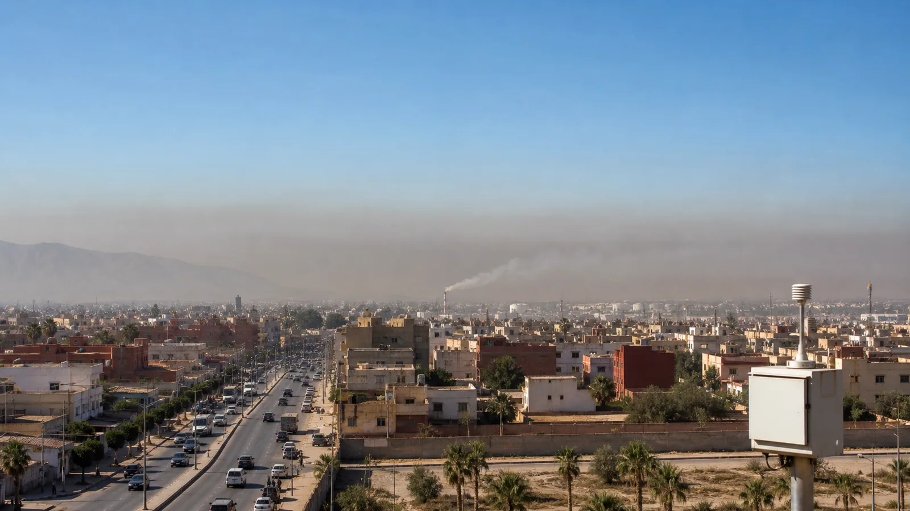

Station urbaine
Photo réelle + panache simulé

8 km/h
Station PM2.5— µg/m³
Prédis, règle les émissions et observe le panache.
PM2.5— µg/m³
NO₂— µg/m³
Visibilité— km
Risque— indice

| # | Mission | Condition | Résultat clé |
|---|---|---|---|
| Les mesures apparaîtront ici. | |||